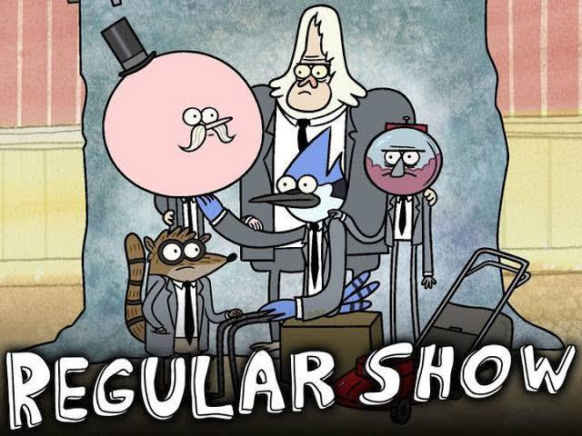
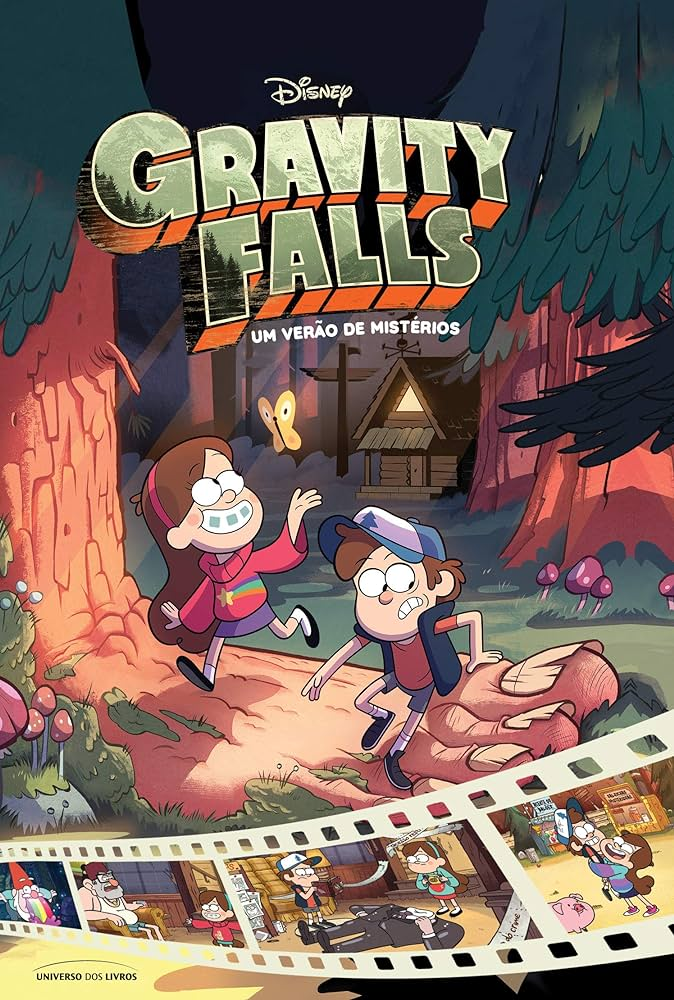

- Apenas um show
- +10
- O programa tem como protagonistas dois zeladores de um parque: um gaio-azul de mais
de 1,80 m de altura chamado Mordecai, e um guaxinim chamado Rigby. Mordecai e Rigby
são melhores amigos que passam seus dias tentando se divertir, de todas as maneiras
possíveis.
- Talvez, a grande virtude de Apenas um Show seja ser simples sem ser “infantil”. Sim,
o desenho tem classificação livre, as crianças podem assistir à vontade. Porém há algo
na fórmula dele que agrada muito os mais velhos também.
Pode ser que seja a boa química entre os protagonistas ou as inúmeras referências ao
passado, principalmente anos anos 80. Tem um pouco de De Volta para o Futuro, Os Aventureiros do Bairro Proibido,
Um Morto Muito Louco, Power Rangers, Star Wars e outros.
Depois de 8 temporadas de muito sucesso, o desenho chegou ao fim em 16 de janeiro desse ano e Quintel deu a seguinte declaração:
“Fazer Apenas Um Show foi muito divertido, mas nós já contamos todas as histórias que queríamos e estamos fazendo a escolha que
deveríamos fazer. Me sinto muito orgulhoso e feliz em ver que as pessoas abraçaram meu sonho de uma maneira tão grande. Nós estamos
encerrando um ciclo”.
A produção de novos episódios pode ter sido encerrada, mas temos aí muitos deles para assistir!

- Gravity Falls: Um Verão de Mistérios
- L - livre para todas as idades
- Gravity Falls é uma série animada da Disney Channel que conta as aventuras dos irmãos gêmeos,
o sagaz Dipper e a adorável Mabel Pines, cujos planos pro verão são arruinados quando seus pais
os enviam para ficarem com seu tio-avô, o charlatão Grunkle Stan em Gravity Falls, Oregon.
O problema é que a cidade é cheia de mistérios… e monstros! Lá, entre aventuras, enigmas e confusões,
eles trabalham para o seu tio-avô na Cabana Misteriosa, junto com o cômico Soos e a graciosa e descolada Wendy,
por quem Dipper é apaixonado.
- O último episódio de Gravity Falls foi ao ar em 2016, nos Estados Unidos. A série teve apenas duas temporadas,
mesmo com a insistência da Disney para que o criador, Alex Hirsch, desse continuidade às aventuras de Mabel e Dipper Pines.
Mas era o suficiente: uma das melhores séries animadas já produzidas precisava acabar exatamente como terminou.
Uma história fechadinha, sem enrolação, que respeitou a audiência até o fim, de crianças a adultos. Gravity Falls:
Um Verão de Mistérios (aqui no Brasil) é o exemplo perfeito para quando se fala que algo é “para todas as idades”.
Os gêmeos Mabel e Dipper vão passar o verão na casa do excêntrico tio avó, Stanley Pines (Tio Stan), que tem também
uma loja de itens exóticos e lembrancinhas para turistas, a Cabana do Mistério. Dipper acha um diário com o número três
estampado na capa, no meio da floresta. No conteúdo do livro, escritos sobre seres extraordinários e muito mistério.
Em 40 episódios, você vai entender os mistérios que rondam a pequena cidade e o diário, se divertir com o senso de
humor, aventura e criatividade que levam a animação para caminhos imprevisíveis. A dica é: preste atenção em todos os detalhes
O último episódio de Gravity Falls foi ao ar em 2016, nos Estados Unidos. A série teve apenas duas temporadas, mesmo com a insistência
da Disney para que o criador, Alex Hirsch, desse continuidade às aventuras de Mabel e Dipper Pines.
Mas era o suficiente: uma das melhores séries animadas já produzidas precisava acabar exatamente como terminou. Uma história
fechadinha, sem enrolação, que respeitou a audiência até o fim, de crianças a adultos. Gravity Falls: Um Verão de Mistérios
(aqui no Brasil) é o exemplo perfeito para quando se fala que algo é “para todas as idades”.
Os gêmeos Mabel e Dipper vão passar o verão na casa do excêntrico tio avó, Stanley Pines (Tio Stan), que tem também uma loja
de itens exóticos e lembrancinhas para turistas, a Cabana do Mistério. Dipper acha um diário com o número três estampado na capa,
no meio da floresta. No conteúdo do livro, escritos sobre seres extraordinários e muito mistério.
Em 40 episódios, você vai entender os mistérios que rondam a pequena cidade e o diário, se divertir com o senso de humor,
aventura e criatividade que levam a animação para caminhos imprevisíveis. A dica é: preste atenção em todos os detalhes
do cenário e o que se passa atrás da cena principal. A experiência vai ser ainda melhor!
do cenário e o que se passa atrás da cena principal. A experiência vai ser ainda melhor!